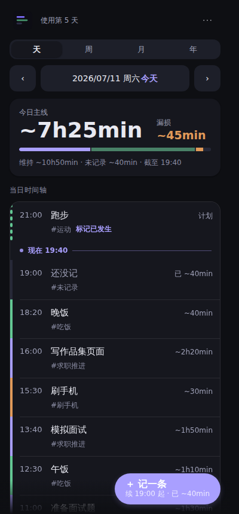
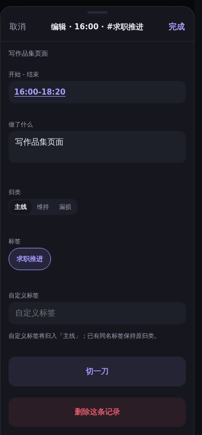

一天的形状，一眼看清。
连续日志时间轴，左侧一条竖脊按主线/维持/偏航/未记录上色——不用逐条翻记录，一眼就知道今天大致是怎么过的。

没记的时间，不会被抹掉。
忘记记录的时间段会诚实地显示为「未记录」，不会被四舍五入进其它桶、也不会为了凑满 100% 而悄悄消失。

你的数据只在你手里。
所有记录只存在浏览器本地 localStorage，零账号、零后端、零追踪；完整 JSON 备份随时复制、下载或分享。
偏航不是错误。
时间按主线 / 维持 / 偏航 / 未记录四桶归类——维持是睡觉吃饭这类必要消耗，偏航只回答「今天离主线偏了多少」，不做道德评判。
安装到主屏幕（可选）
- iPhone / iPad：在 Safari 打开应用 → 分享 → 「添加到主屏幕」，即可离线全屏使用。
- 桌面 Chrome / Edge：地址栏右侧「安装」图标。
- 不安装也可以直接在浏览器里使用，功能相同。
从旧地址迁移
如果你此前在 wowayou.github.io/time-logger/ 使用时间尺：浏览器数据按域名隔离，记录不会自动跟过来。在旧地址「···」菜单里「存储备份」导出完整 JSON，然后在新应用「···」菜单里「导入」即可，导入前会逐条校验并预览冲突。
数据边界
- 所有记录只存在浏览器本地（
localStorage），不上传、不同步、无账号。 - 本站不加载任何统计、广告或第三方脚本。
- 完整备份可随时复制、下载或分享为 JSON；换设备或换浏览器用「导出 → 导入」迁移，导入是按记录逐条校验的安全合并。
- 清除浏览器站点数据会删除记录——请定期导出备份。